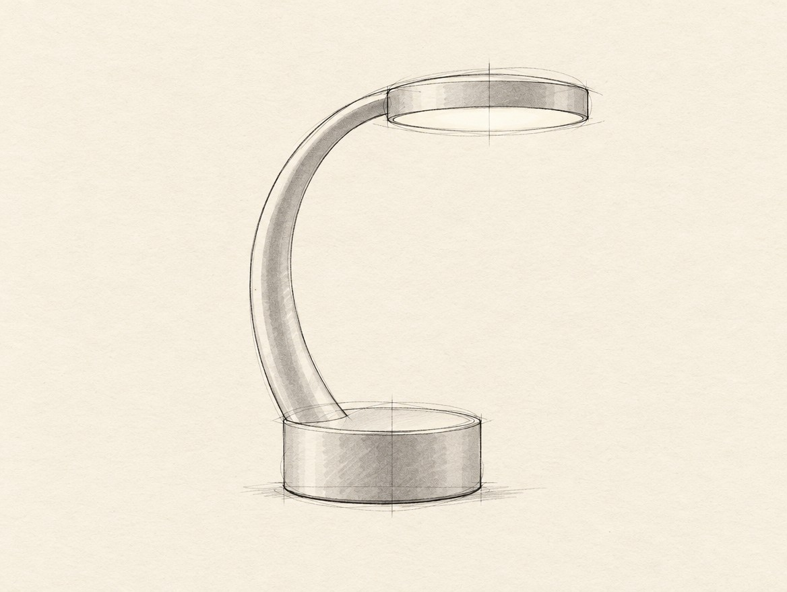
01 ROUGH SKETCH
예시 램프의 러프 스케치
→

02 AI SELECTED CONCEPT
AI로 시각화하고 선택한 콘셉트
→
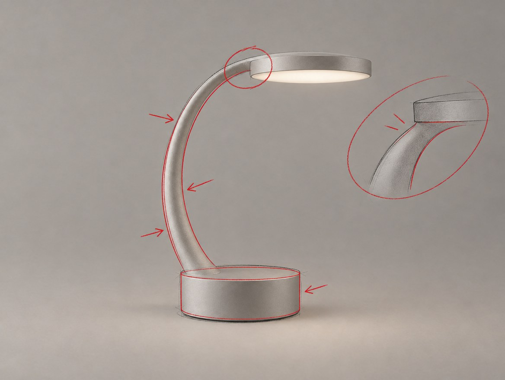
03 DESIGN REVISION
수정할 부분을 스케치로 표시한 검토안
Week 02 — Offline · AI × Industrial Design
DEVELOP
From Selected Concept to Design Revision
선택한 콘셉트를 실제 제품 디자인으로 발전시키기 위해 검토하고 수정 방향을 결정한다.
Week 02 — Offline
Today
WHAT WE DO TODAY
새 아이디어를 만드는 날이 아니라, 선택한 콘셉트를 검토하고 수정 방향을 결정하는 날이다.
PART 01
Concept Review
선택한 콘셉트를
디자인 관점에서 다시 보기
PART 02
Form & Proportion
형태와 비례 분석
Practice 01
PART 03
Function & Usability
사용자 행동 기준으로 검토
Practice 02
PART 04
Structure & Feasibility
구조적 타당성 검토
Practice 03
PART 05
Design Direction
수정 방향과
우선순위 결정
Practice 04
PART 06
Feedback
보드를 돌려 보고
메모로 피드백
진행 방식
설명은 램프 예시로, 실습은 각자의 Selected Concept로
결과물
Design Revision Board — 무엇을 유지하고, 무엇을, 왜, 어떤 순서로 고칠지 결정한 한 장
2
PART 01 — Concept Review
1주차 과정을 거친 예시 — 램프
FROM IDEA TO IMAGE

PROBLEM · USER
작은 공간에서 독서 · 작업하는 사용자, 조명을 필요한 곳으로 옮기기 어렵다
ANALYSIS
FORM · CMF · DETAIL · CONTEXT 네 기준으로 레퍼런스를 분석
01
DESIGN BRIEF →
문제와 사용자 정의
02
REFERENCE →
FORM · CMF · DETAIL · CONTEXT
03
ROUGH SKETCH →
아이디어를 손으로
04
AI EXPLORATION →
여러 렌더 중 탐색
05
SELECTED CONCEPT
하나의 방향 선택
1주차는 아이디어를 시각적으로 탐색하고 하나의 방향을 고르는 과정이었다. 수업은 이 램프 예시로, 실습은 각자의 콘셉트로 진행한다. 사용성 · 구조 · 비율은 아직 충분히 검토되지 않았다.
질문
"여러분이 선택한 이미지는 완성된 제품 디자인일까요?"
3
PART 01 — Concept Review
선택은 완성이 아니다
SELECTED ≠ FINISHED
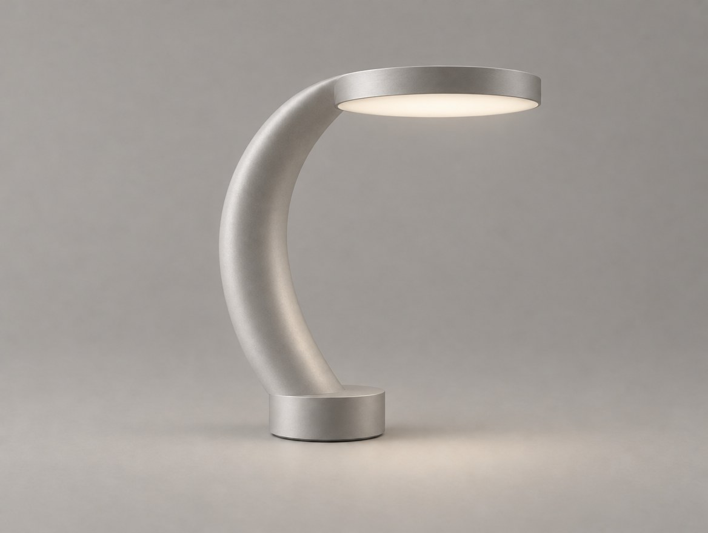
① 지나치게 작은 베이스
② 두꺼운 지지대
③ 전원 버튼은 어디에?
④ 움직일 수 없는 헤드
Selected Concept는 디자인을 발전시키기 위한 출발점이다.
아직 검토해야 할 항목
FORM
제품의 전체적인 형태
PROPORTION
부품 사이의 비율
USE
사용자의 행동과 사용 방식
STRUCTURE
구조적 연결과 안정성
SCALE
제품의 실제 크기
GOAL
디자인 목표와의 적합성
4
PART 01 — Concept Review
좋은 이미지와 좋은 디자인
GOOD IMAGE ≠ GOOD DESIGN
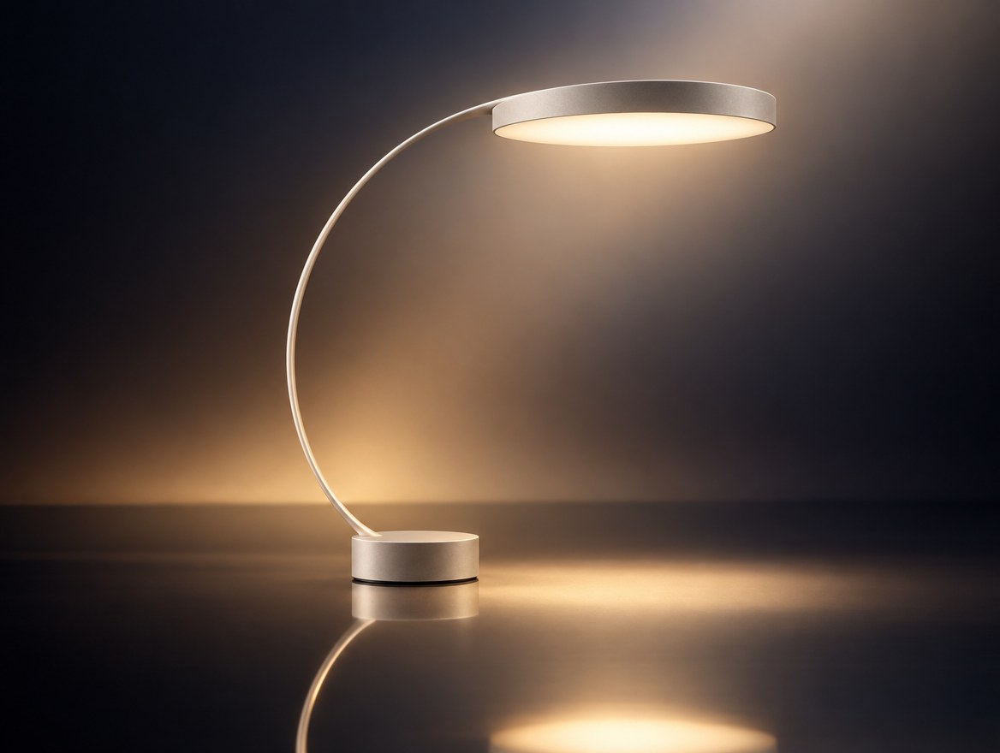
GOOD IMAGE
· 시각적으로 매력적이다
· 조명과 소재 표현이 사실적이다
· 구도가 좋다
· 완성된 제품처럼 보인다
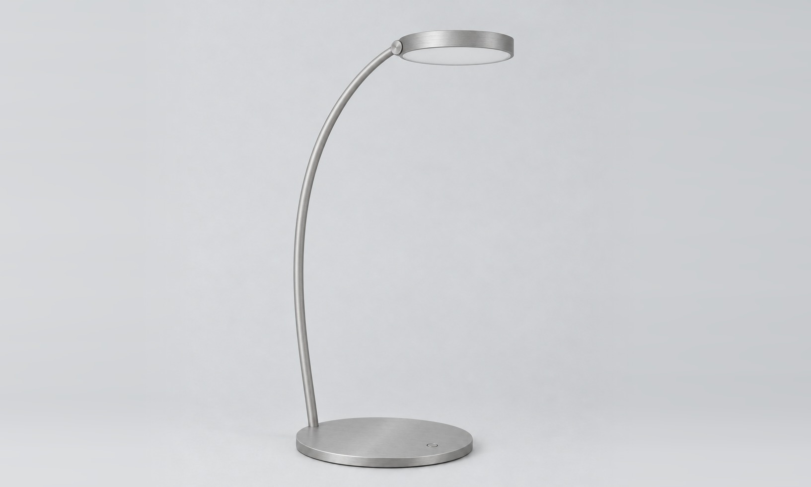
GOOD DESIGN
· 사용자의 문제를 해결한다
· 기능과 형태가 연결된다
· 사용 방법을 이해할 수 있다
· 구조적으로 설득력이 있다
· 실제 사용 환경에 적합하다
5
PART 01 — Concept Review
AI가 결정한 것과 디자이너가 결정한 것
WHO MADE THE DECISION?
→
DESIGNER
곡선 지지대 1개
얇은 원형 헤드
낮은 원통형 베이스
AI MAY HAVE DECIDED
스케치에 없던 두께 · 마감 · 비례
보이지 않는 뒷면과 크기
AI가 자동으로 결정했을 수 있는 것
01
스케치에 없던 연결부
02
소재와 마감
03
버튼 위치
04
제품의 두께
05
부품 간 비율
06
뒷면의 구조
07
실제 크기
AI가 만들어 준 형태가 모두 디자이너의 의도는 아니다.
질문
"여러분의 제품에서 직접 결정한 부분은 무엇이고, AI가 임의로 만든 부분은 무엇인가요?"
6
PART 01 — Concept Review
CONCEPT AUDIT
REVIEW YOUR CONCEPT
01
PURPOSE
이 제품은 어떤 문제를 해결하는가?
02
IDENTITY
이 제품을 구분하는 핵심 특징은 무엇인가?
03
FUNCTION
제품의 기능이 형태에서 읽히는가?
04
USABILITY
사람이 실제로 사용하기 쉬운가?
05
STRUCTURE
구조적으로 이해되지 않는 부분은 없는가?
06
AI ASSUMPTION
AI가 임의로 만들어낸 요소는 무엇인가?
1주차에 적어 둔 '다음에 확인할 점'에서 시작한다. 여섯 질문에 답하지 못하는 곳이 오늘 검토할 곳이다.
7
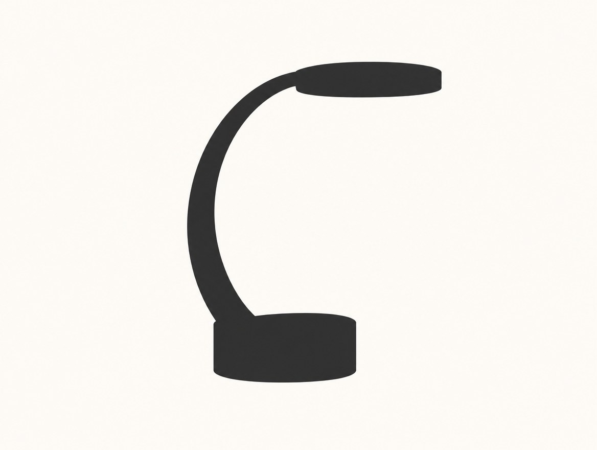
02
Week 02 Offline · Form & Proportion
FORM & PROPORTION
How does the product take shape?
"왜 이 제품은 이런 형태여야 할까요?"
PART 02 — Form & Proportion
형태는 디자인 결정이다
FORM IS NOT DECORATION
제품의 형태는 시각적인 취향만으로 정해지지 않는다.
형태를 결정하는 요소
사용 목적
기능
사용자
사용 환경
구조
소재
디자인 정체성
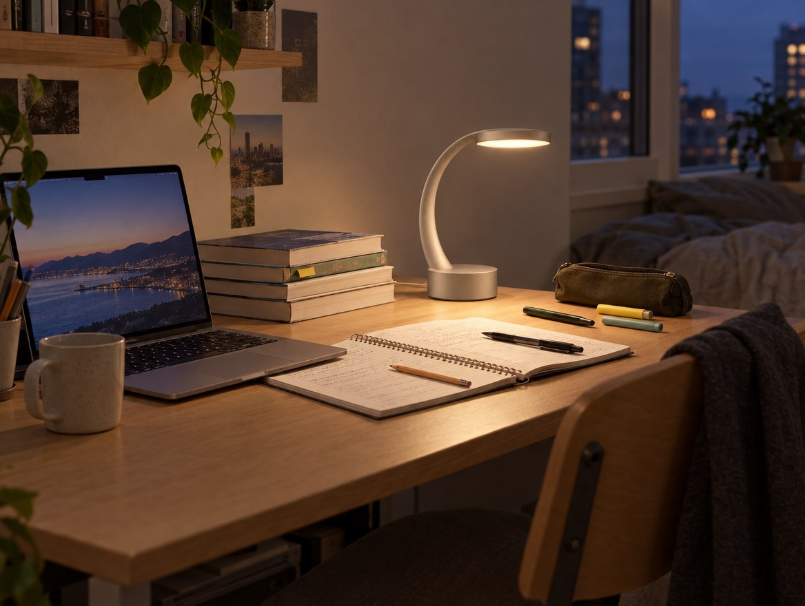
사례 · 작은 책상에서 쓰는 램프라면
· 공간을 적게 차지하는 베이스
· 필요한 방향으로 빛을 전달하는 헤드
· 제품을 안정적으로 지지하는 구조
· 이동하기 편리한 크기
9
PART 02 — Form & Proportion
색상과 소재를 제거해도 제품의 특징이 남아 있을까?
SILHOUETTE
PRODUCT RENDER
색 · 소재 · 빛이 있는 상태
SILHOUETTE
단색으로 채운 외곽
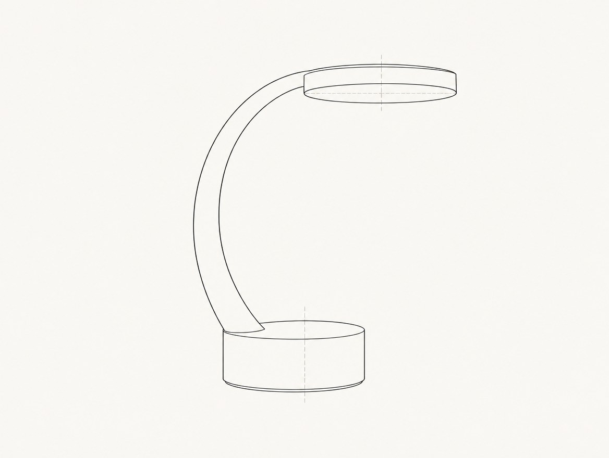
CONTOUR
외곽선과 중심축
OUTLINE
전체 외곽선
LINES
주요 곡선과 직선
DIRECTION
형태의 방향성
WEIGHT
제품의 시각적 무게
IDENTITY
다른 제품과 구분되는 특징
10
PART 02 — Form & Proportion
형태 분해
DECONSTRUCT THE FORM
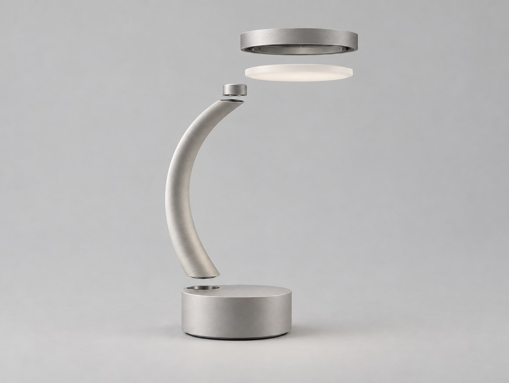
PRIMARY
제품의 전체 형태를 결정하는 가장 큰 덩어리
램프 · 전체적인 곡선형 실루엣
SECONDARY
기능을 구성하는 주요 부분과 부품
램프 · 베이스, 지지대, 조명 헤드
DETAIL
연결부, 버튼, 모서리 등 작은 요소
램프 · 전원 버튼, 연결부, 조명 확산판
큰 덩어리부터 본다. PRIMARY가 흔들리면 DETAIL을 다듬어도 해결되지 않는다.
11
PART 02 — Form & Proportion
같은 제품, 다른 비율
SAME PRODUCT, DIFFERENT PROPORTION
W : H ≈ 1 : 1.5
A · TALL & NARROW
1 : 0.5
B · LOW & WIDE
1 : 0.9
C · BALANCED
1 : 0.8
D · COMPACT
WIDTH : HEIGHT
제품의 전체 폭과 높이
BODY : SUPPORT
본체와 지지 구조의 비율
THICK : THIN
두꺼운 부분과 얇은 부분
SOLID : VOID
채워진 공간과 빈 공간
PRODUCT : HUMAN
제품과 사용자의 크기 관계
비율이 바뀌면 인상뿐 아니라 사용성도 달라진다. A는 빛이 높이 퍼지고, B는 넓은 면을 비추고, D는 들고 다니기 쉽다.
12
PART 02 — Form & Proportion
시각적 균형
VISUAL BALANCE
시각적 무게 · 헤드
지지 면적 · 베이스
눈으로 느끼는 무게 중심
베이스 중심축
1
무게감이 어느 부분에 집중되는가?
2
위쪽과 아래쪽의 비례는 적절한가?
3
제품이 불안정해 보이지 않는가?
4
좌우의 형태가 의도적으로 균형을 이루는가?
5
시각적 중심과 실제 지지 구조는 어떻게 다른가?
13
PART 02 — Form & Proportion
제품을 사람과 함께 놓으면 무엇이 달라 보일까?
DESIGN FOR HUMAN SCALE
PRODUCT ONLY
크기를 알 수 없다
ON THE DESK
노트북 · 책과 비교된다
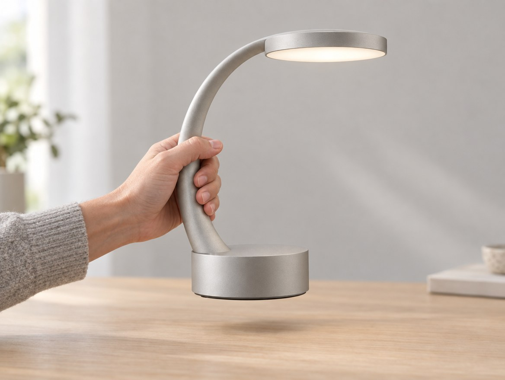
IN THE HAND
손과 비교하면 실제 크기가 보인다
HAND
사람의 손과 제품 크기
REACH
사용자가 닿아야 하는 위치
POSTURE
사용 자세
LIFT
제품을 들어 올리는 방식
SPACE
사용 환경과 제품 크기의 관계
14
PART 02 — Form & Proportion
형태 분석 사례
WHAT SHOULD CHANGE?
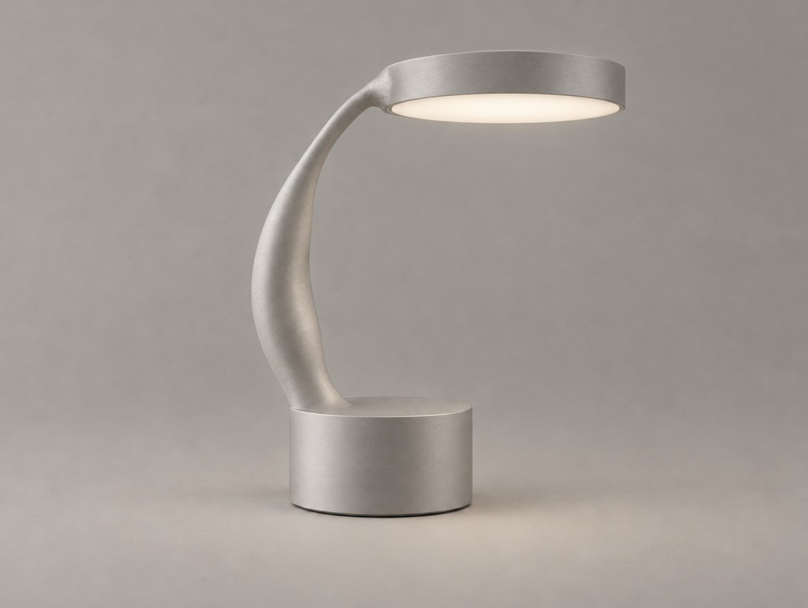
01 두꺼운 베이스
02 큰 헤드
03 고르지 않은 두께
04 어색한 연결
01
베이스가 지나치게 두꺼워 제품이 무겁게 보인다.
02
조명 헤드가 너무 커서 전체 비례가 불균형하다.
03
곡선형 지지대의 두께가 일정하지 않다.
04
지지대와 헤드의 연결이 어색하다.
개선 방향
· 베이스 두께 재검토
· 헤드와 베이스의 비율 조정
· 지지대의 곡률과 두께 일관성 확보
· 연결부 구조 검토
15
Practice 01
Concept & Form Analysis
자신의 Selected Concept를 점검하고, 형태와 비례를 분석합니다.
이미지 위에 표시
1주차 '다음에 확인할 점' 옮겨 적기
GOOD · QUESTION · PROBLEM
각 2개 이상
SILHOUETTE · PRIMARY / SECONDARY FORM
PROPORTION · VISUAL BALANCE
작성할 내용
유지할 형태 2개
수정할 형태 2개
수정해야 하는 이유
결과물
Concept & Form Analysis Sheet
→ PART 05의 KEEP · CHANGE로 이어짐
16
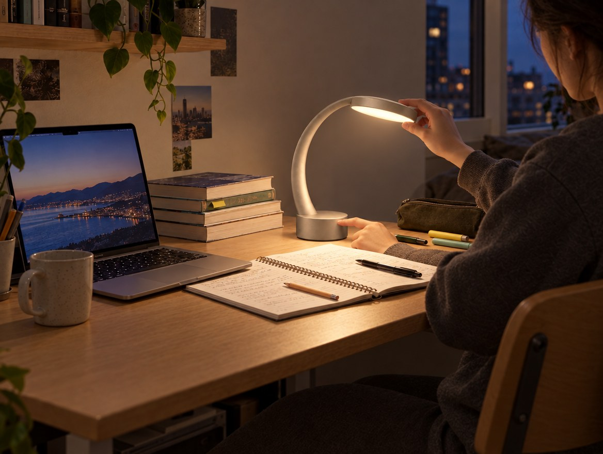
03
Week 02 Offline · Function & Usability
FUNCTION & USABILITY
Can people actually use it?
제품은 보기 위한 물체가 아니라 사람이 사용하는 물체입니다.
PART 03 — Function & Usability
제품을 명사가 아니라 행동으로 본다
THINK IN ACTIONS
01
LAMP →
명사
02
MOVE →
옮기다
03
PLACE →
놓다
04
TURN ON →
켜다
05
ADJUST →
조절하다
06
TURN OFF
끄다
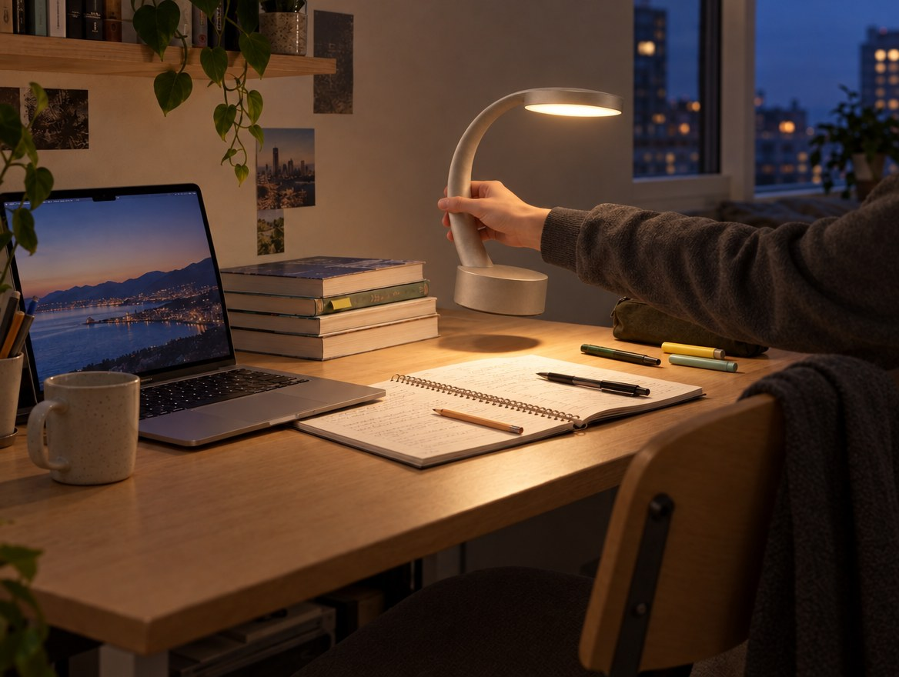
MOVE
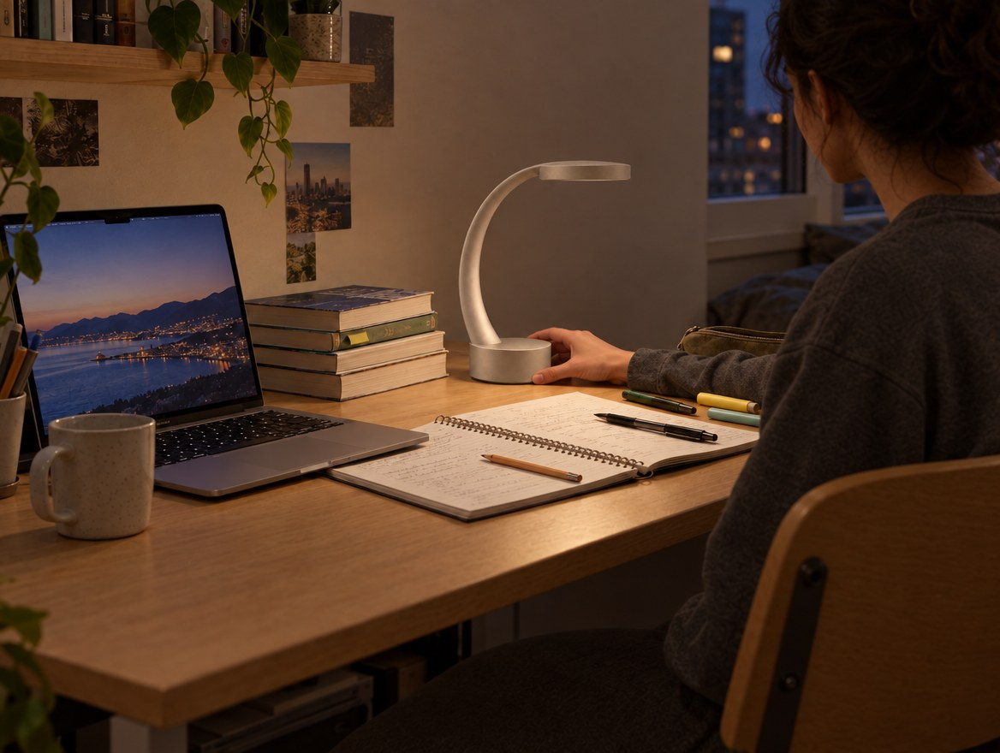
PLACE
TURN ON · ADJUST
질문
"사용자는 이 제품을 사용하기 위해 어떤 행동을 해야 할까요?"
18
PART 03 — Function & Usability
사례 · 휴대용 무선 램프
USER ACTION MAP
01
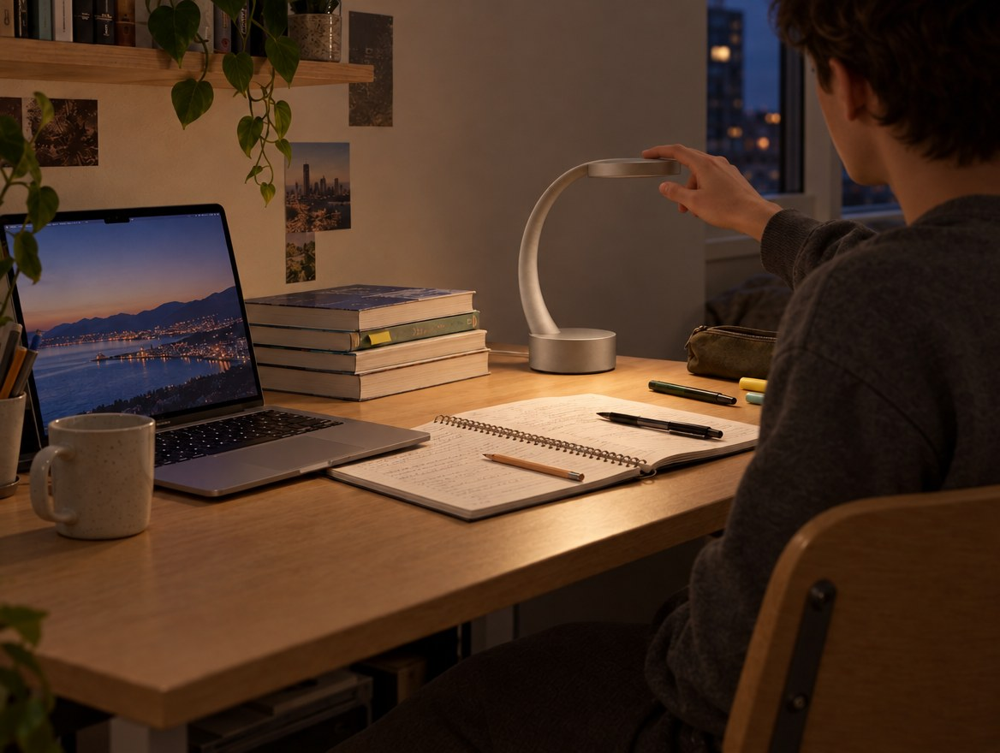
APPROACH
사용자가 제품에 접근한다.
02
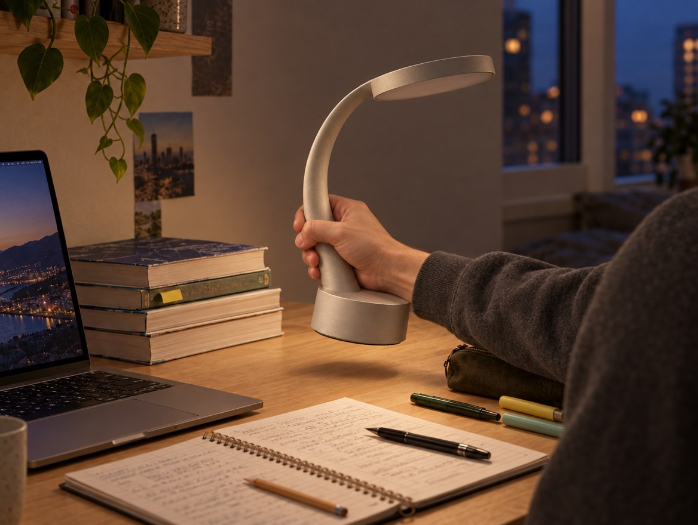
GRAB
제품을 손으로 잡는다.
03
MOVE
원하는 위치로 이동한다.
04
PLACE
책상 위에 제품을 놓는다.
05
OPERATE
전원을 켜고 방향을 조절한다.
각 장면에서 볼 것
손이 닿는 위치 · 필요한 힘과 방향 · 시선이 가는 곳 · 행동이 막히는 순간
19
PART 03 — Function & Usability
행동 → 조건 → 형태
FUNCTION CREATES FORM
ACTION
제품을 잡는다
REQUIREMENT
손이 안정적으로 닿을 수 있어야 한다
FORM
잡기 쉬운 형태 또는 그립 영역
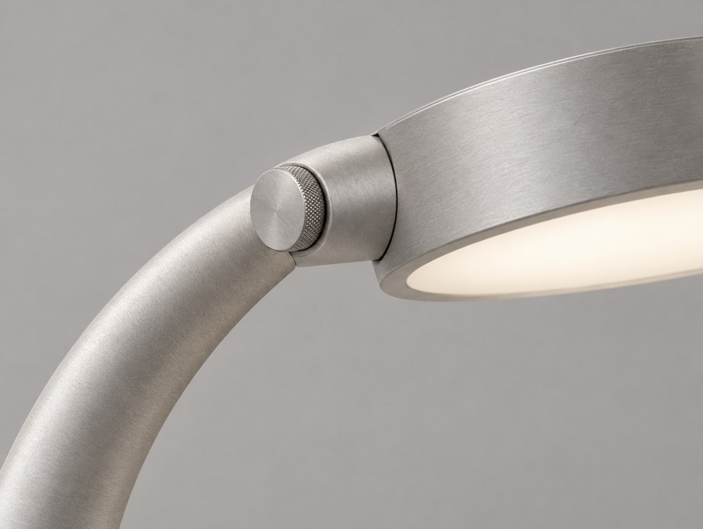
ACTION
조명 방향을 조절한다
REQUIREMENT
헤드가 움직이거나 방향을 바꿀 수 있어야 한다
FORM
회전축이나 조절 구조
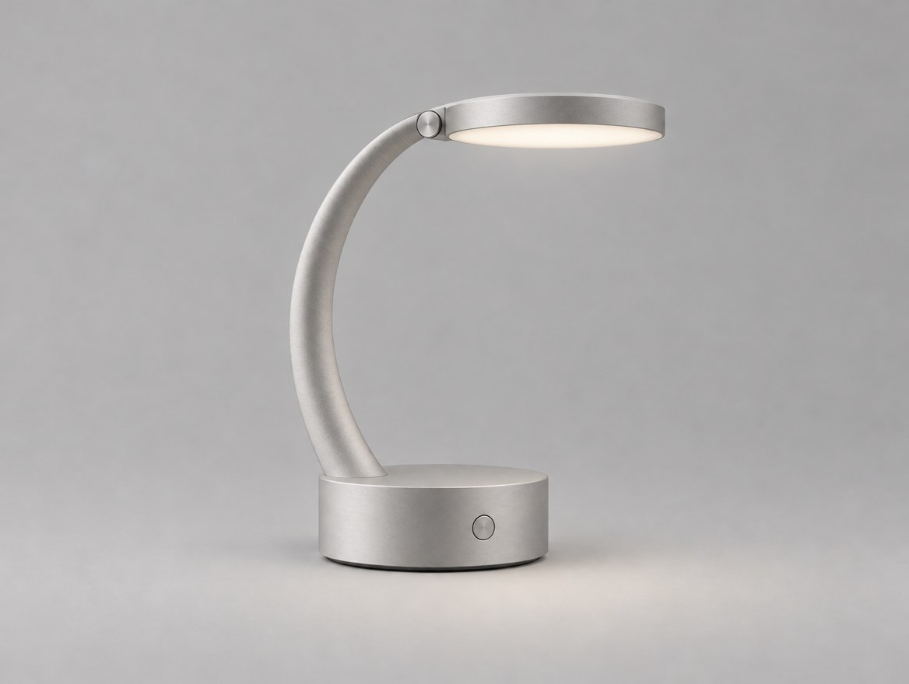
ACTION
제품을 책상 위에 놓는다
REQUIREMENT
사용 중 안정적으로 서 있어야 한다
FORM
베이스의 크기와 지지 구조 검토
20
PART 03 — Function & Usability
제품은 어떻게 사용 방법을 알려주는가?
HOW DOES THE PRODUCT COMMUNICATE?
AFFORDANCE
가능한 행동
제품과 사용자의 관계에서 가능한 행동
SIGNIFIER
행동의 단서
어디서 어떻게 행동해야 하는지 알려주는 단서
예시
· 손가락이 들어갈 수 있는 홈
· 누를 수 있음을 알려주는 버튼의 형태
· 잡는 위치를 구분하는 표면 처리
· 회전 방향을 나타내는 표시
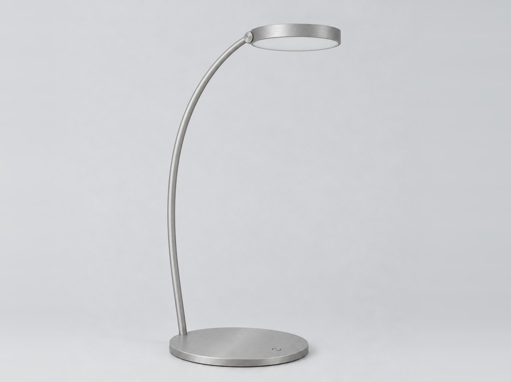
· 누를 수 있어 보이는 버튼
· 움직일 것 같은 연결부
21
PART 03 — Function & Usability
몸을 기준으로 디자인한다
DESIGN AROUND THE BODY
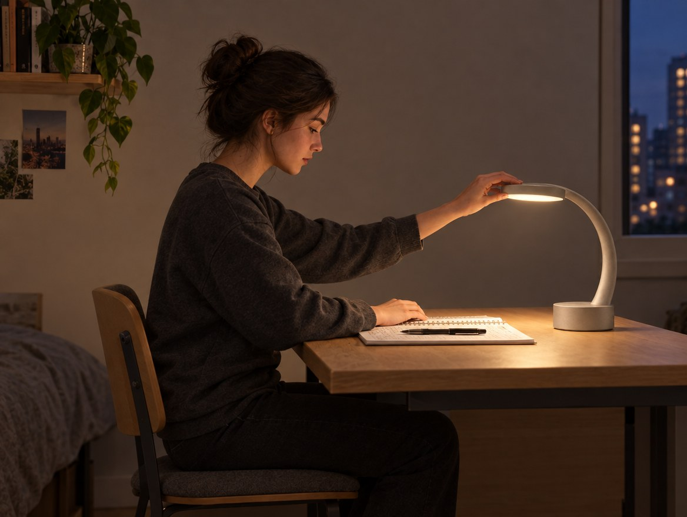
VISIBILITY · 시선
REACH · 팔 뻗음
REACH
필요한 위치에 손을 뻗을 수 있는가?
GRIP
제품을 안정적으로 잡을 수 있는가?
POSTURE
사용 중 불편한 자세가 요구되지 않는가?
FORCE
사용에 과도한 힘이 필요하지 않은가?
VISIBILITY
조작부와 상태를 확인하기 쉬운가?
22
PART 03 — Function & Usability
실제 생활에서는 무슨 일이 일어날까?
WHAT HAPPENS IN REAL LIFE?
USER
작은 책상에서 공부하는 대학생
SPACE
좁은 책상, 노트북, 책, 필기구
GOAL
필요한 위치에 조명을 두고 쉽게 조절하기
검토 질문
· 제품을 놓을 충분한 공간이 있는가?
· 손이 닿기 어려운 부분은 없는가?
· 조명 헤드가 다른 물건과 간섭하지 않는가?
· 이동하거나 조절할 때 불편하지 않은가?
23
Practice 02
User Action Mapping
자신의 제품을 사용하는 과정을 3~5단계로 정리합니다.
단계마다 작성
ACTION — 사용자는 무엇을 하는가?
CONTACT — 제품의 어느 부분과 접촉하는가?
REQUIREMENT — 필요한 조건은?
PROBLEM — 현재 콘셉트의 문제는?
결과물
User Action Map
추가 실습
사용 과정에서 개선이 필요한 부분을
이미지 또는 스케치 위에 표시
24
04
Week 02 Offline · Structure & Feasibility
CAN THIS PRODUCT EXIST?
Looks possible is not works possible.
AI가 생성한 이미지는 구조적으로 가능한 제품임을 보장하지 않습니다.
PART 04 — Structure & Feasibility
그럴듯해 보이는 것과 작동하는 것
LOOKS POSSIBLE ≠ WORKS POSSIBLE
AI 제품 이미지에서 생기는 문제
01
연결되지 않은 부품
02
실제 지지 구조가 없는 형태
03
불가능해 보이는 움직임
04
지나치게 얇은 연결부
05
조립 방법이 불분명한 구조
06
소재의 특성과 맞지 않는 형태
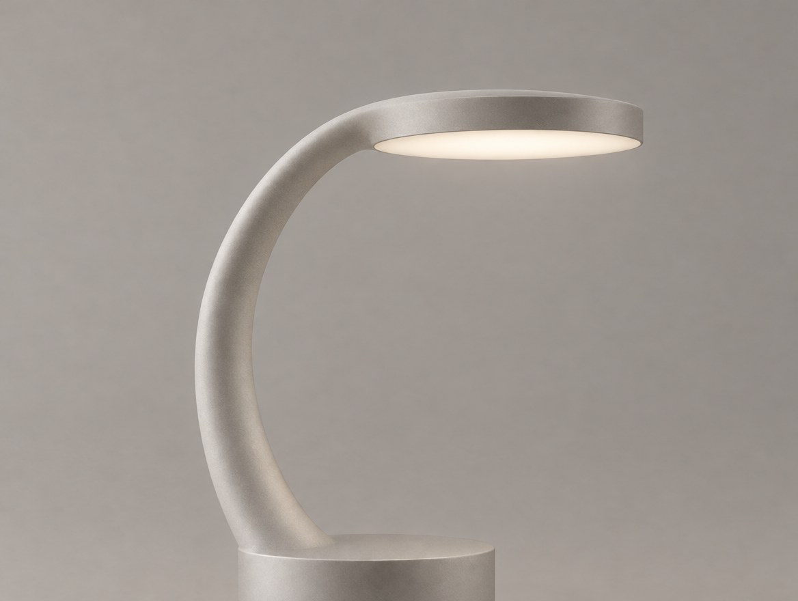
UNCLEAR
A · 연결이 불분명
지지대가 헤드에 녹아든 듯 이어져 어떻게 연결되는지, 움직이는지 알 수 없다
CLEAR
B · 연결부가 명확
원통형 피벗 허브와 분할선이 보여 연결 방식과 회전 가능성이 읽힌다
26
PART 04 — Structure & Feasibility
무엇이 제품을 지지하는가?
WHAT SUPPORTS THE PRODUCT?
헤드의 하중
지지대를 따라 전달
베이스의 지지 폭
1
하중이 어느 부분에 작용하는가?
2
제품은 어떤 부분을 통해 지지되는가?
3
베이스는 충분한 안정성을 제공하는가?
4
돌출된 부품은 어떻게 지지되는가?
5
사용 중 움직이거나 넘어질 가능성은 없는가?
왼쪽은 하중의 흐름을 이해하기 위한 개념도다.
27
PART 04 — Structure & Feasibility
부품은 어떻게 연결되는가?
HOW DO PARTS CONNECT?
하나로 이어져 있는가?
별도 부품이 결합되는가?
움직이는 연결부인가?
분리하거나 조립할 수 있는가?
연결부가 외부로 드러나는가?
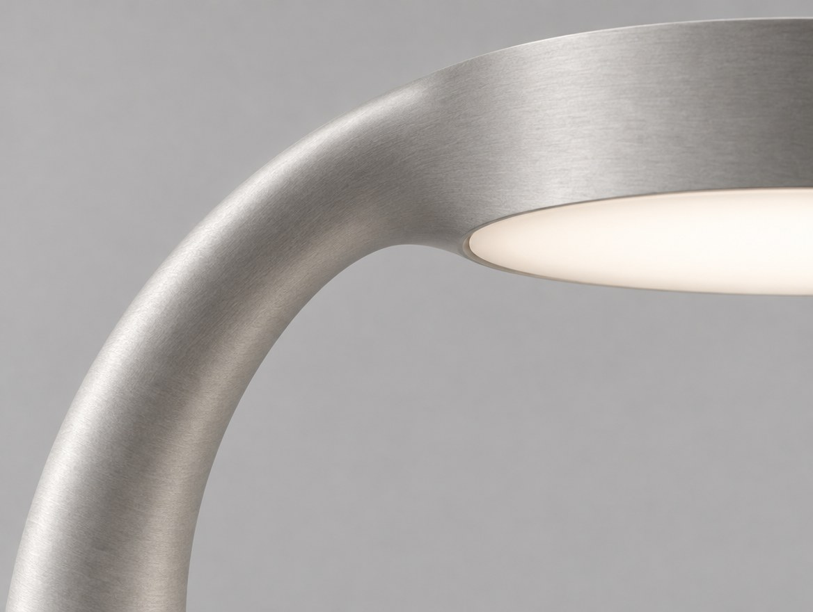
INTEGRATED
하나의 연속된 형태
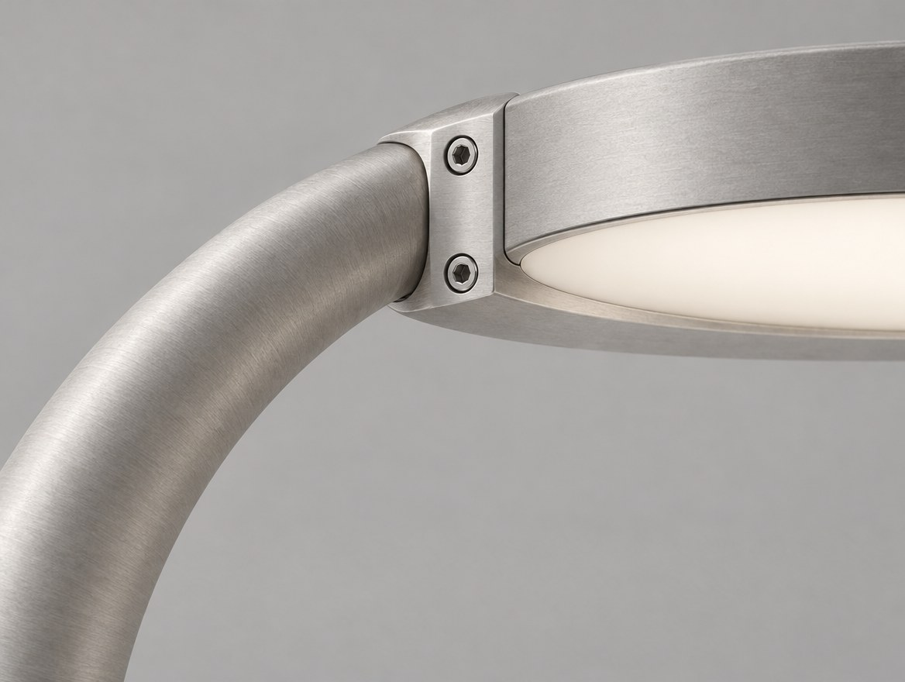
EXPOSED JOINT
연결부가 드러나는 구조
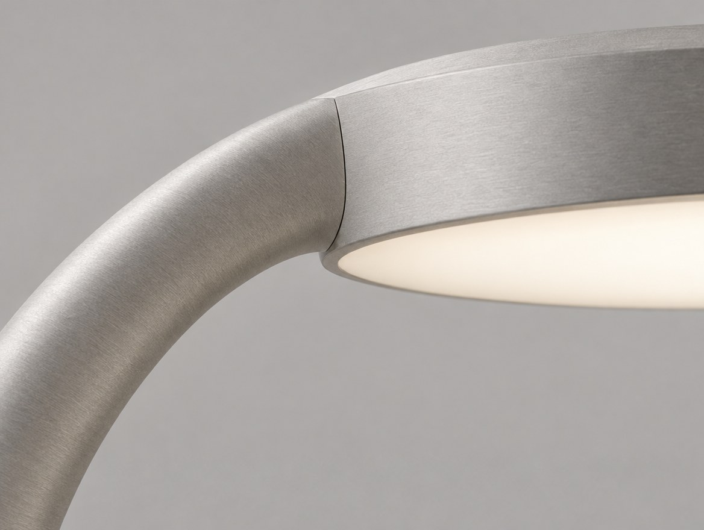
HIDDEN JOINT
연결부가 잘 보이지 않는 구조
MOVING JOINT
회전 또는 움직임이 필요한 구조
28
PART 04 — Structure & Feasibility
구조 분석 사례
FIND THE WEAK POINT
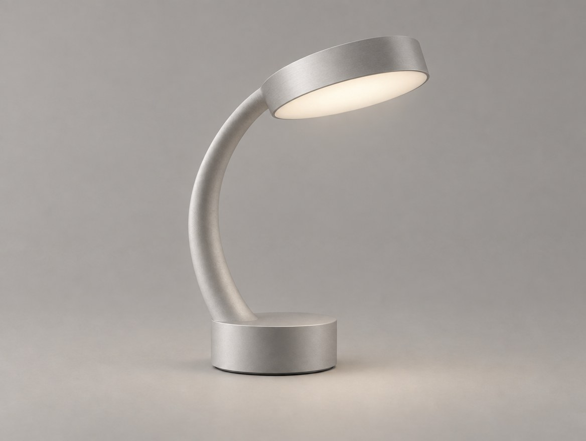
01 연결되어 있나?
02 무거운 헤드
03 회전 구조 없음
04 전원은 어디에?
01
조명 헤드와 지지대가 실제로 연결되어 있는지 불분명하다.
02
베이스에 비해 헤드가 너무 크고 무겁게 보인다.
03
각도 조절이 가능한 형태처럼 보이지만 회전 구조가 없다.
04
전원 공급 방식과 부품 배치가 표현되지 않았다.
개선 방향
· 연결부 구조를 명확히 표현한다
· 헤드와 베이스의 비례를 검토한다
· 필요한 경우 조절 구조를 제안한다
· 주요 부품의 배치와 작동 방식을 설명한다
질문
"이 연결부는 실제로 어떻게 움직일까요? 그림만 보고 답할 수 있나요?"
29
Practice 03
Structural Review
자신의 Selected Concept에서 구조적 요소를 찾습니다.
찾을 요소
SUPPORT — 제품을 지지하는 부분
CONNECTION — 부품이 연결되는 부분
MOVEMENT — 움직임이 필요한 부분
ASSEMBLY — 조립 · 분리가 필요한 부분
작성할 내용
구조적으로 의문이 있는 부분 2개 이상
각 문제의 개선 방향
필요한 경우 수정 스케치
결과물
Structural Review Sheet
30
05
Week 02 Offline · Design Direction
DECIDE BEFORE YOU MODIFY
Analysis becomes a decision.
수정 작업을 시작하기 전에 무엇을 바꾸고 무엇을 유지할지 결정해야 합니다.
PART 05 — Design Direction
분석에서 결정으로
ANALYSIS → DECISION
지금까지 분석한 항목
FORM
PROPORTION
FUNCTION
USABILITY
STRUCTURE
→
다음 단계
KEEP
반드시 유지할 것
CHANGE
수정할 것
CONSTRAINT
바뀌면 안 되는 조건
PRIORITY
먼저 고칠 것
분석 자체가 목적이 아니다. 실제 수정에 쓸 디자인 의사결정을 만들어야 한다.
32
PART 05 — Design Direction
KEEP
WHAT SHOULD REMAIN?
디자인을 수정하더라도 반드시 유지해야 하는 특징을 정의한다.
01
전체 실루엣
02
주요 곡선
03
제품의 기본 구조
04
핵심 기능
05
사용자가 인식하는 제품 정체성
KEEP · 곡선 지지대 하나
KEEP · 얇은 원형 헤드
질문
"이 요소가 사라지면 여전히 같은 디자인이라고 할 수 있을까요?"
33
PART 05 — Design Direction
CHANGE
WHAT SHOULD CHANGE?
PROBLEM · 문제
베이스가 너무 두꺼워 보인다.
→
CHANGE · 수정 방향
베이스 두께를 줄여 전체 비례를 개선한다.
PROBLEM · 문제
전원 버튼의 위치가 불분명하다.
→
CHANGE · 수정 방향
사용자가 쉽게 접근할 수 있는 위치에 조작부를 배치한다.
PROBLEM · 문제
지지대와 헤드의 연결이 어색하다.
→
CHANGE · 수정 방향
연결 구조를 명확하게 표현한다.
분석에서 발견한 문제를 구체적인 수정 대상으로 바꾼다. 부위 + 방향 + 이유가 있어야 한다.
34
PART 05 — Design Direction
CONSTRAINT
WHAT MUST NOT CHANGE?
수정 과정에서 반드시 지켜야 하는 조건을 정한다.
01
제품의 주요 실루엣 유지
02
핵심 기능 유지
03
전체적인 크기 범위 유지
04
사용 목적 변경 금지
05
불필요한 부품 추가 금지
BASE
BEFORE
원래 콘셉트
RISK
NO CONSTRAINT
조건 없이 수정하면 콘셉트가 바뀔 수 있다
수정 조건이 없으면, 다음 온라인 실습에서 AI를 쓸 때 원래 콘셉트가 크게 달라질 수 있다.
35
PART 05 — Design Direction
PRIORITY
WHAT SHOULD WE FIX FIRST?
HIGH PRIORITY
· 기능을 수행하기 어려운 문제
· 구조적으로 큰 의문이 있는 문제
· 사용자 행동을 방해하는 문제
· 핵심 디자인 목표와 충돌하는 문제
MEDIUM PRIORITY
· 주요 비율과 형태 개선
· 조작부 위치 조정
· 형태 언어의 일관성 개선
LOW PRIORITY
· 작은 모서리 처리
· 미세한 표면 디테일
· 장식 요소
Fix the important problems first.
36
PART 05 — Design Direction
DESIGN REVISION PLAN
TURN YOUR ANALYSIS INTO A PLAN
SELECTED CONCEPT · 수정 전
PROJECT
휴대용 무선 테이블 램프
DESIGN GOAL
작은 작업 공간에 적합한 휴대용 조명
KEEP
곡선형 지지대 · 얇은 원형 헤드 · 간결한 실루엣
CHANGE
1. 베이스 두께 감소 2. 헤드와 지지대 연결부 개선 3. 전원 버튼 위치 명확화
CONSTRAINT
기본 실루엣 유지 · 휴대용 조명 기능 유지 · 불필요한 부품 추가 금지
PRIORITY
1. 연결 구조 → 2. 전체 비례 → 3. 조작부
37
PART 05 — Design Direction
수정 방향을 스케치로
SKETCH THE CHANGE
수정 방향은 텍스트뿐 아니라 스케치로도 표현할 수 있어야 한다.
01
베이스 두께를 줄인 스케치
02
조명 헤드 크기를 조정한 스케치
03
연결부를 개선한 스케치
04
버튼 위치를 변경한 스케치
렌더를 출력해 그 위에 직접 그린다. 수정선 · 비율 표시 · 확대 스케치 · 화살표면 충분하다.
38
Practice 04
Design Revision Board
지금까지의 분석 결과를 하나의 보드로 정리합니다.
포함할 항목
1. SELECTED CONCEPT
2. FORM ANALYSIS
3. USER ACTION MAP
4. STRUCTURAL REVIEW
5. KEEP / CHANGE
6. CONSTRAINT
7. PRIORITY
8. REVISION SKETCH
결과물
Design Revision Board
강사 확인 기준
수정 사항마다 답할 수 있는가
"무엇을 수정할 것인가?"
"왜 수정해야 하는가?"
"어떤 요소는 유지해야 하는가?"
39
PART 06 — Feedback & Assignment
DESIGN CRITIQUE
EXPLAIN YOUR DECISION
01
ORIGINAL INTENT
처음 만들고자 했던 제품
02
CURRENT CONCEPT
현재 선택한 콘셉트
03
IDENTIFIED PROBLEM
분석 과정에서 발견한 문제
04
REVISION DIRECTION
수정할 내용과 이유
자신의 수정 계획을 네 단계로 Revision Board 옆에 적는다. 길게 쓰지 말고, 이유를 분명하게.
40
PART 06 — Feedback & Assignment
HOW TO GIVE FEEDBACK
SPECIFIC FEEDBACK
BAD · 잘못된 피드백
"조금 더 세련되게 만들면 좋겠어요."
"비율이 좀 이상해요."
"더 예쁘게 수정하면 좋겠어요."
BETTER · 개선된 피드백
"현재 조명 헤드가 베이스에 비해 지나치게 커서 상단이 무거워 보입니다. 헤드의 지름을 줄인 안과 베이스의 폭을 넓힌 안을 각각 비교해 보면 좋겠습니다."
OBSERVATION
무엇이 문제인가?
REASON
왜 문제가 되는가?
SUGGESTION
어떻게 수정할 수 있는가?
41
PART 06 — Feedback & Assignment
PEER REVIEW
REVIEW EACH OTHER
2~3인이 서로의 Design Revision Board를 돌려 보고, 아래 세 가지를 메모로 적어 준다.
01
가장 잘 유지해야 할 특징
1개
02
가장 먼저 수정해야 할 문제
1개
03
추가로 검토하면 좋을 사항
1개
목표 — 다른 사람의 관점에서 자신의 디자인을 다시 검토한다. 피드백은 앞장의 OBSERVATION → REASON → SUGGESTION 구조로.
42
PART 06 — Feedback & Assignment
FINAL REVISION DECISION
DEFINE YOUR NEXT MOVE
KEEP
3
CHANGE
3
CONSTRAINT
2+
FIRST PRIORITY
1
REVISION SKETCH
1+
다음 온라인 실습에서는 이 내용을 그대로 AI에 전달해 제품을 수정한다.
모호한 표현 → 구체적인 표현
"좀 더 가볍게" → "베이스 높이를 줄이고 지지대 두께를 일정하게 맞춘다"
43
PART 06 — Feedback & Assignment
WEEK 02 OFFLINE OUTPUT
DESIGN REVISION BOARD
01 SELECTED CONCEPT
선택한 콘셉트
02 CONCEPT & FORM ①
GOOD · QUESTION · PROBLEM
03 CONCEPT & FORM ②
실루엣 · 비례 · 균형
04 USER ACTION MAP
잡기 → 옮기기 → 조작
05 STRUCTURAL REVIEW
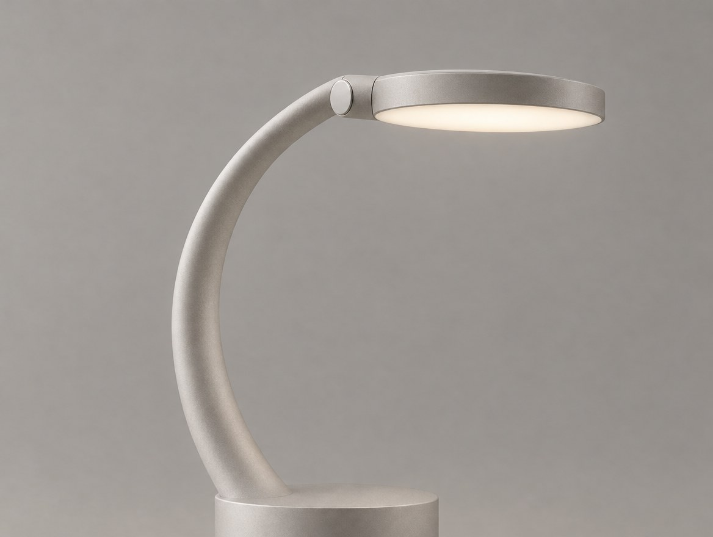
연결부 · 지지 · 움직임
06 KEEP · CHANGE
KEEP 곡선 지지대 · 원형 헤드
CHANGE 베이스 두께 · 연결부 · 버튼
CONSTRAINT 실루엣 · 기능 · 부품 수
유지 · 수정 · 조건(CONSTRAINT)
07 PRIORITY
1 연결 구조
2 전체 비례
3 조작부
먼저 고칠 순서
08 REVISION SKETCH
렌더 위 수정 스케치
44
NEXT · WEEK 02 ONLINE
NEXT — REFINE WITH AI
01
SELECTED CONCEPT
+ REVISION BOARD
02
KEEP / CHANGE /
CONSTRAINT
03
AI IMAGE
EDITING
04
CONTROLLED
VARIATION
05
COMPARE
06
REFINED
CONCEPT
이번 오프라인 수업에서는 무엇을 수정할지 결정했다.
다음 온라인 수업에서는 그 결정을 AI로 실제 구현한다.
Don't change everything. Change what matters.
45